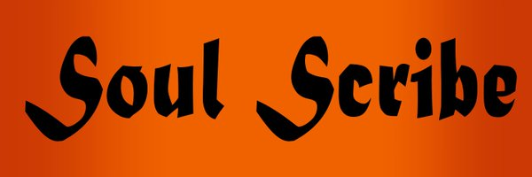
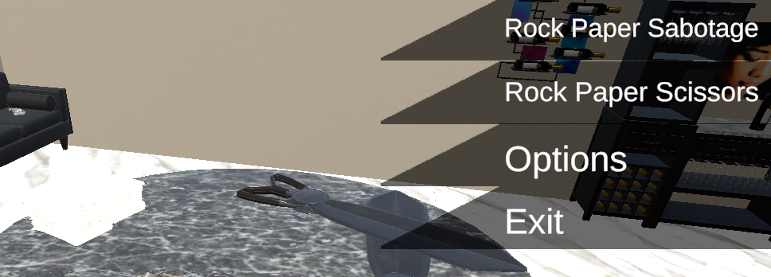

Personal Projects
Valorant Randomizer
Html, CSS, Javascript
This is a web application that I made to enhance and challenge players who enjoy the game know as Valorant. This uses javascript to update images, text files, and perform calculations by extracting set information from text files to randomize a player experience for each round they play in the game. Has CSS styles using a mix of grid and flex layout styles with a responsive format for different screen sizes making use of the HTML structure.
You can check it either by clicking the image or clicking this link: Valorant Randomizer
This was worked on from Oct 2026 to Nov 2026
Soulscribe
Unity C#
Using the unity engine, this is a top down isometric style game inspired by games such as Final Fantasy Tatics and Fire Emblem. This game provides a custom AI to give various level difficulty depending on enemies faced and a working turn-based system with movement and battle phases.
Coding practices involved include Inheritance for the different enemy types, asynchronous functionality to control enemy decision making, and a key understanding of the SOLID principles.
This was started on July 2025 and is an ongoing project

Rock Paper Sabotage
Unity C#
Using the unity engine, this is a game that is a inspired by the classic rock papper scissors game. Using enhance logic to make a more strategic version of the classic game, programmed animations, and raycasting to create an interactive interface. With a simple but easy to navigate UI for players to adjust the game to their preferred prefrences. A unique key feature of the game was the ability to host a local multiplayer game so that users could play agaisnt other people in real time.
This was worked on from Jul 2024 to Oct 2024

Guilty Pleasures
Java, SQL
A group capstone project with two other members worked on during my college journey at Full Sail University. The project goal was decided during group collaboration where we landed on the idea of making an app that displays movies and the metrics about them such as popularity.
My responsibilities were mainly focus on the creating and optimizing the SQL logic used to fetch data from the Movie Database we deicided to use. Other features I worked on include using the Java backend to design and program the Modal view and refining the login verficiation requirements. This project was maintain by the group through learning and using Git and Github with version controls.
This was worked on from Aug 2021 to Sept 2021